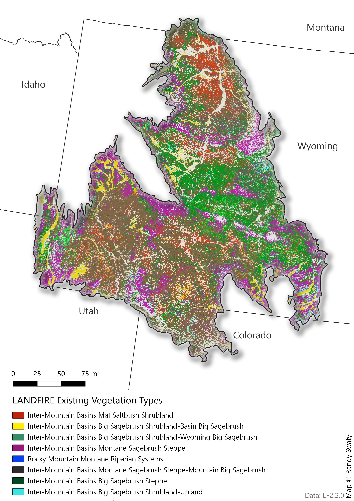
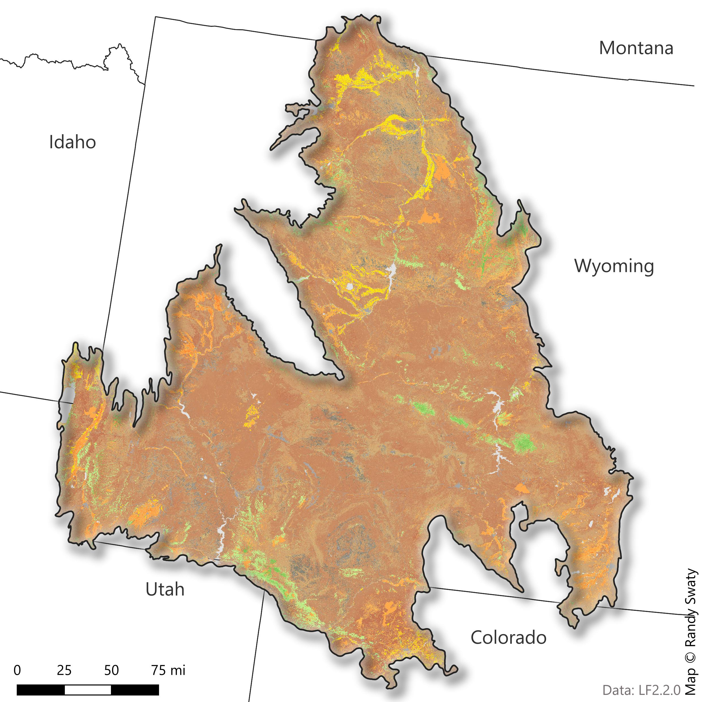

Present: Current Ecosystem Conditions
LANDFIRE’s Existing Vegetation Type, Cover and Height datasets describe vegetation conditions.
- Existing Vegetation Type (EVT) - represents the current distribution of the terrestrial ecological systems classification, developed by NatureServe for the western hemisphere, through 2016
- Existing Vegetation Cover (EVC) - represents the vertically projected percent cover of the live canopy layer for a 30-m cell
- Existing Vegetation Height (EVH) - represents the average height of the dominant vegetation for a 30-m cell
Read more about LANDFIRE Vegetation Products
Summary
- More than 60% of the landscape is dominated by sagebrush EVT.
Most Prevalent Existing Vegetation Types

Most Prevalent Existing Vegetation Types
Existing Vegetation Cover
The Existing Vegetation Cover (EVC) map is a visual representation of EVC classifications across the subregion. The chart below the map provides a breakdown of each vegetation cover classification and their relative dominance across the subregion
From this information, we can see that the majority of this subregion is classified as “shrub,” comprising approximately 80% of the vegetation cover.

Existing Vegetation Height
The Existing Vegetation Height (EVH) map showcases EVH across the subregion. The chart below the map provides the percentage of the landscape represented by each EVH height.
From these results, we can see the majority of vegetation on the landscape is .25-.9 meters in height.
